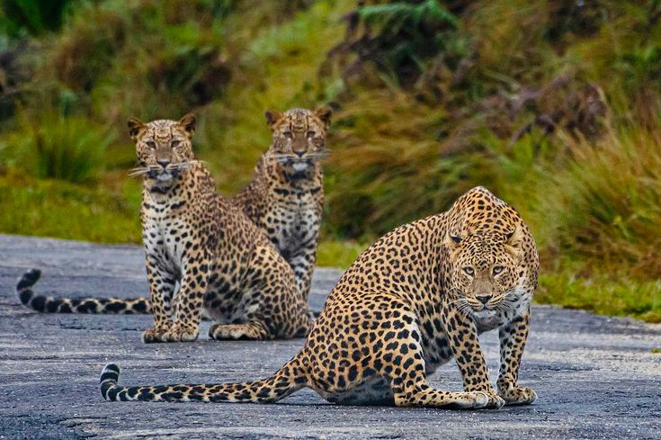
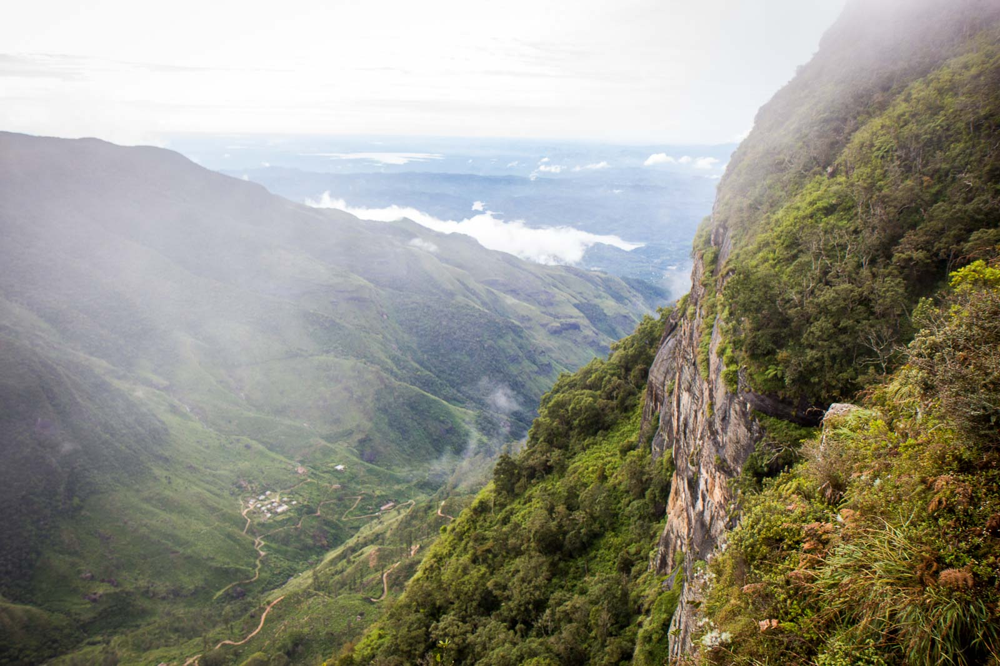
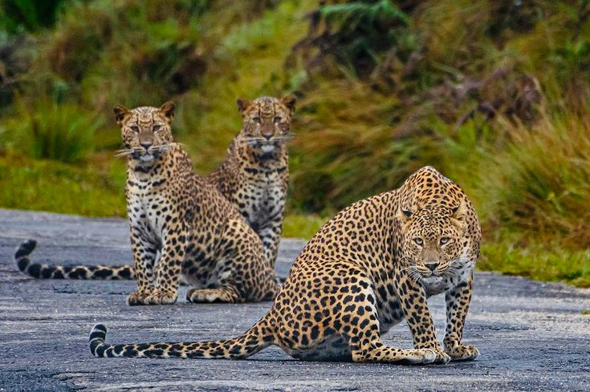
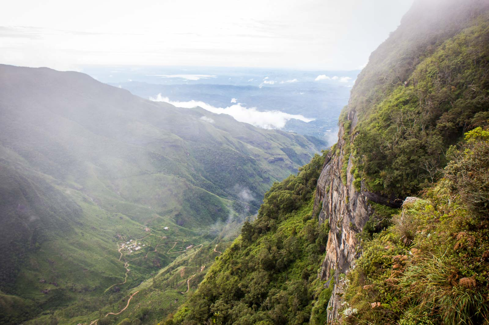
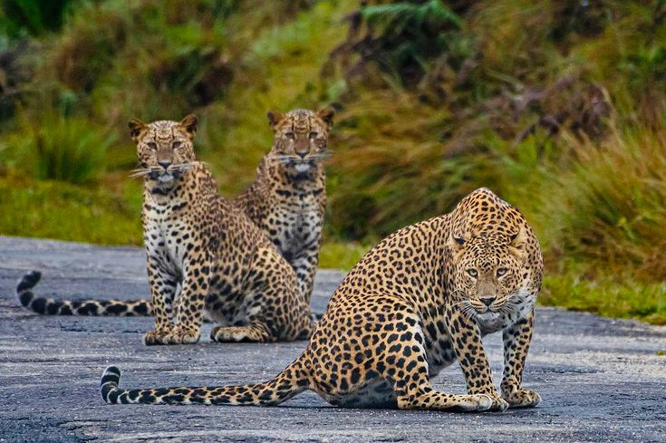
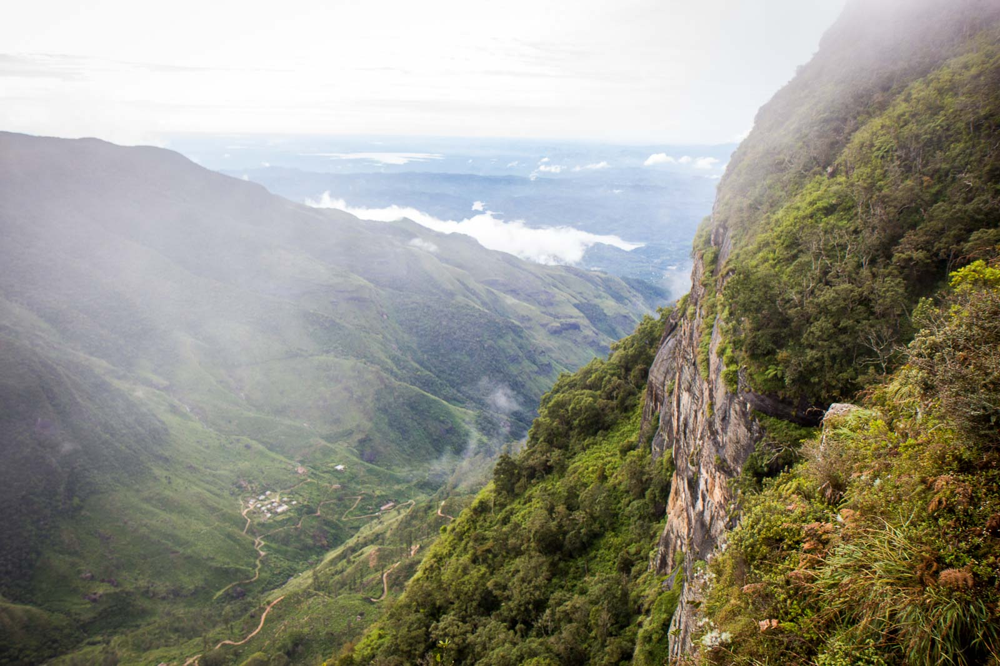
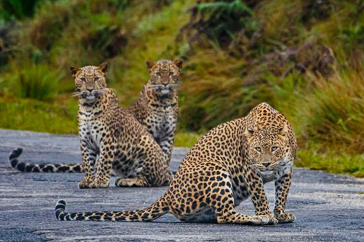
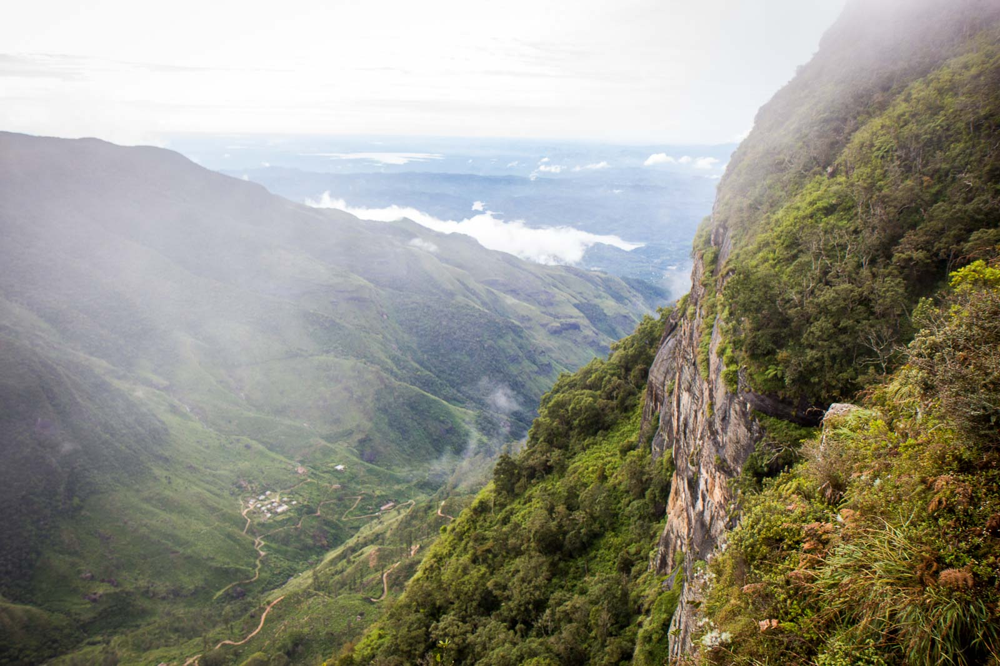

Nestled in the central highlands of Sri Lanka, shrouded in mystique and natural beauty, lies the breathtaking Horton Plains National Park. A sanctuary for nature enthusiasts, this park is a testament to the vision of its founder and a haven for diverse wildlife and stunning landscapes. In this article, we'll embark on a journey to discover the wonders of Horton Plains, explore its unique offerings for travelers, and learn how we can play a role in preserving its extraordinary biodiversity.
Named after Sir Robert Wilmot-Horton, the British Governor of Ceylon in the mid-19th century, Horton Plains is a testament to his appreciation for nature's beauty. It was declared a national park in 1988, and today, it stands as a testament to the foresight of its founder.
Hiking Trails: Lace up your boots and explore the park's well-marked trails. The World's End and Baker's Falls are iconic destinations that offer stunning vistas and serene waterfalls.
Birdwatching: With its altitude and diverse habitats, Horton Plains is a haven for birdwatchers. Spot the elusive Sri Lankan Whistling Thrush or the vibrant Yellow-eared Bulbul.
Photography Opportunities: Capture the park's unique landscapes, misty vistas, and diverse flora and fauna. The dramatic landscapes provide ample material for photography enthusiasts.
Dry Season (December to March): This period offers the best weather conditions for trekking and clear views from World's End.
World's End: This iconic viewpoint offers a dramatic 880-meter drop, providing panoramic views of the surrounding landscape.
Baker's Falls:A short trek from the main entrance leads to this enchanting waterfall. It's an ideal spot for a refreshing break.
Horton Plains Plateau:Explore this vast plateau, home to unique plant species and roaming sambar deer.
Respect Park Rules: Stay on designated paths to avoid damaging the fragile ecosystem. Do not disturb wildlife, and avoid making loud noises.
Litter-Free Visits: Carry out all waste with you and dispose of it responsibly. Help maintain the park's pristine environment.
Support Conservation: Consider donating to or volunteering with organizations dedicated to preserving Horton Plains' unique ecosystem.
Horton Plains National Park isn't just a destination; it's an opportunity to reconnect with nature's wonders and honor the legacy of its founder. Whether you're an adventure seeker, a nature enthusiast, or a photographer, Horton Plains has something extraordinary to offer. As tourists, we have the privilege and responsibility to protect and preserve the pristine environment of this national treasure. Join us in ensuring that Horton Plains continues to inspire awe and wonder for generations to come. Plan your journey to this paradise in the heart of Sri Lanka and be a part of its ongoing conservation story.